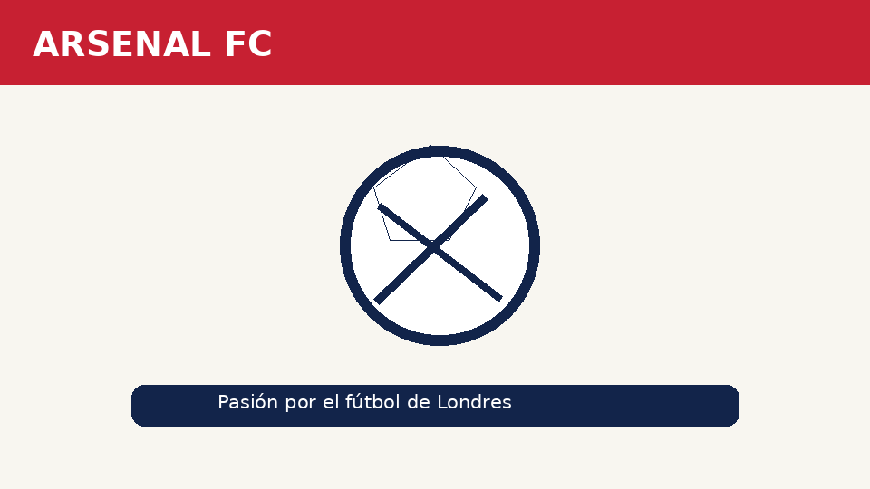

Bienvenidos al mundo del Arsenal
El Arsenal Football Club es un equipo historico del fútbol inglés con sede en Londres. Es conocido por sus colores rojo y blanco y por su apodo, The Gunners.
En esta web conoceras su origen, su estadio, algunas de sus leyendas y sus títulos.

Haz clic en la imagen para conocer la historia del club.
¿Qué encontrarás en esta web?
- Historia de la institución
- Información sobre el Emirates Stadium
- Jugadores históricos
- Palmarés y datos destacados